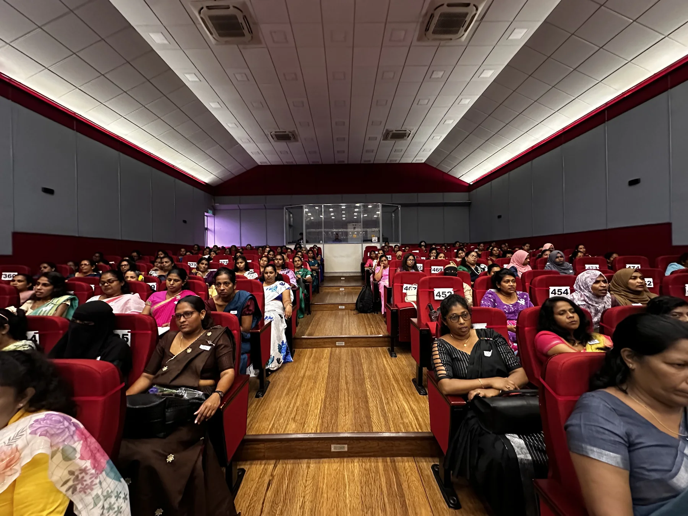
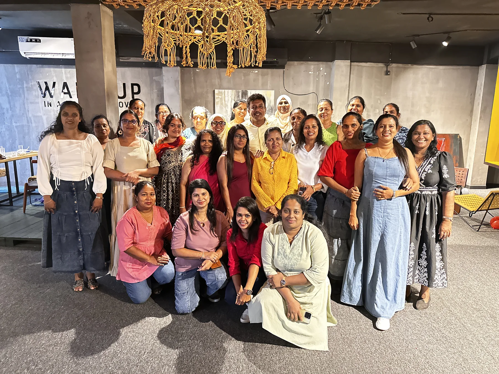
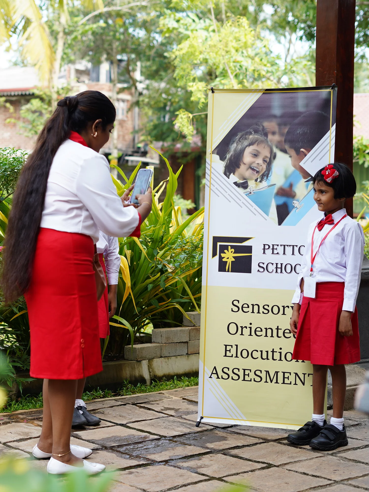

PETTOP LONDON: Program Trailer
Teachers practicing hands-on object association to build natural English comprehension without rote memorization.
Explore moments from our teacher training workshops, sensory-oriented English demonstrations, and joyful preschool classrooms across Sri Lanka.
Watch how our teachers apply sensory-oriented techniques to make English a natural lifestyle for young learners.
Teachers practicing hands-on object association to build natural English comprehension without rote memorization.

Integrating physical movement and voice modulation so children experience English as an everyday lifestyle.

Interactive roleplay sessions helping Sri Lankan preschool teachers speak with warmth, clarity, and assurance.

Demonstrating how teachers present their sensory learning outcomes to gain instant parent trust.
Snapshots from our practical teacher training intakes, certification ceremonies, and sensory activity labs.
Designing low-cost, high-impact sensory teaching aids for Sri Lankan preschool classrooms.
Trainees practicing expressive English storytelling to captivate young minds.
Guiding teachers on how to clearly explain sensory milestones to preschool parents.

Celebrating confident, certified educators ready to remove learning boundaries for children.